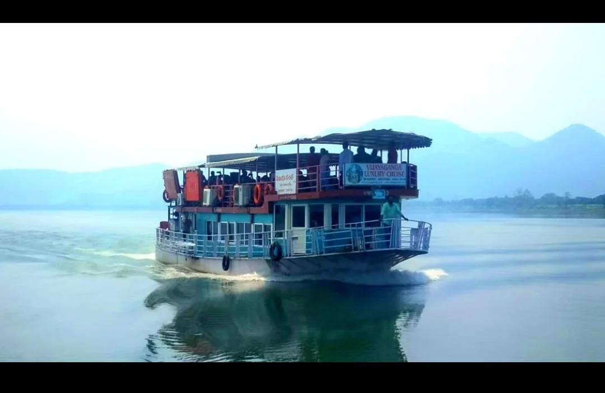
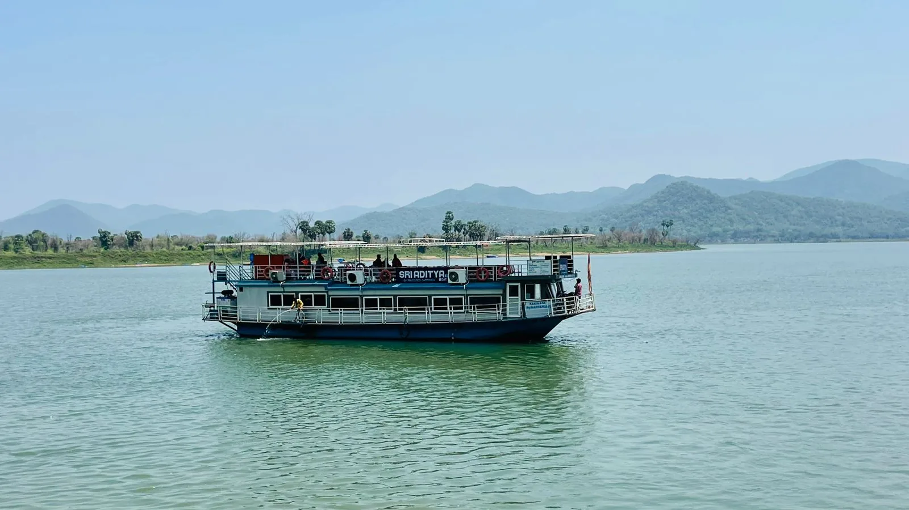
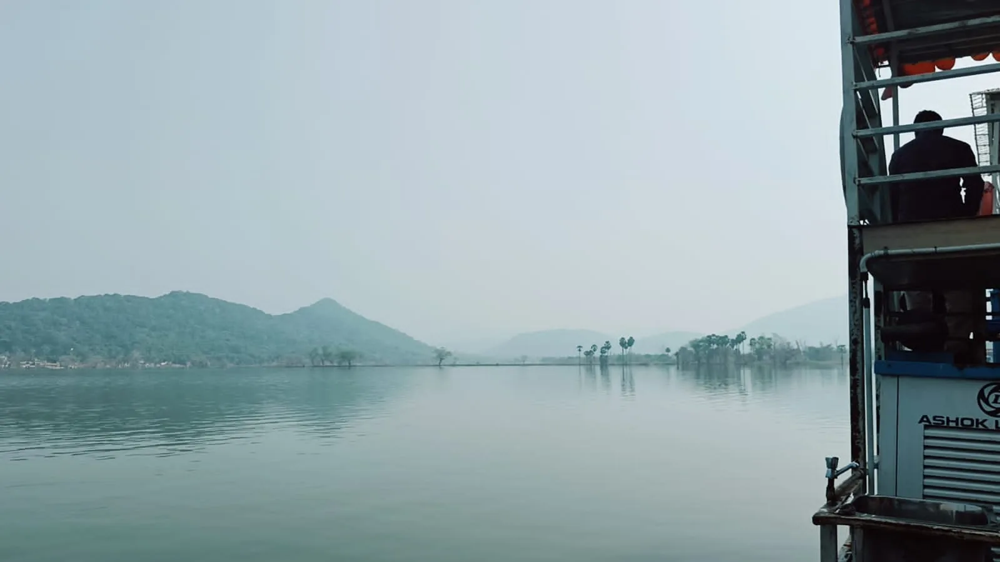
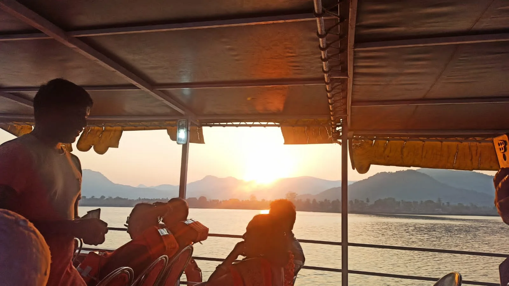

Papikondalu Boat Trip & Tour Packages from Rajahmundry
Boat through the Papikondalu gorge with breakfast and lunch on board. 1-day tours from ₹1,300, a Koruturu night stay, and Bhadrachalam combinations, all from Rajahmundry.
- Papikondalu 1-day boat tour from ₹1,300
- Night stay with campfire at Koruturu
- Bhadrachalam day and 2-day combinations
- WhatsApp booking, local team in Rajahmundry
per adult
night stay
on the boat
peak season
Papikondalu boat trips from Rajahmundry
Papikondalu is one of the most beautiful river journeys in Andhra Pradesh: a stretch of the Godavari where the river narrows into a gorge between steep, forest-covered hills. A Papikondalu boat trip from Rajahmundry takes you through that gorge on a comfortable two-deck river boat, with temples, tribal villages and quiet riverbanks along the way.
At Rajahmundry Tourism (Madhu's Tours & Travels), Papikondalu tourism is our speciality. We run the Papikondalu 1-day tour from ₹1,300 per adult, a two-day Papikondalu night stay at Koruturu with campfire and forest trek, and Bhadrachalam day and two-day combinations. Breakfast and lunch are served on the boat, and our local team handles pickup, boat check-in and the return journey.
Whether you want a family day out, a friends' weekend, a pilgrimage with a river ride or a quiet night in the hills, you can book your Papikondalu tour package on WhatsApp in minutes. Not sure when to go? Winter, from November to February, is the best time to visit Papikondalu.
Papikondalu Boat Trip Packages
Current package details and prices supplied by Madhu Travels. Please confirm availability and departure arrangements before booking.
Papikondalu 1 Day Tour
Places covered
- Gandipochamma Temple
- Papikondalu Hills
- Perantapalli Ashramam & Veereswara Swamy Temple
- Polavaram Project Area, Devipatnam, Koruturu & Sirivaka
Price
per child

Papikondalu Night Stay
Price
per child (3–10 yrs)
Highlights
- Godavari boat journey through Papikondalu
- Forest trekking & water canal experience
- Evening snacks, dinner, accommodation and campfire
- Polavaram Project Area & Devipatnam views

Bhadrachalam 1 Day Package
Price
per child
Visiting places
- Pattiseema
- Polavaram Project
- Gandhi Posamma Temple
- Papikondalu
- Perantapalli Temple
- Bhadrachalam Temple
Bhadrachalam River cum Road
Price
per child (3–10 yrs)
Highlights
- Luxury boat journey through Papikondalu
- Bhadrachalam Temple & Parnasala
- Maddi Anjaneya Swamy & Dwaraka Tirumala
- Road transfer from Pochavaram to Bhadrachalam
Papikondalu Tour Schedule
7:30 AM
Road journey to Gandipochamma Temple Revu for boat check-in.
9:00 AM
Breakfast in the boat, followed by Gandipochamma Temple darshan and the Godavari journey.
1:00 PM
Vegetarian lunch served in the boat while travelling by boat through the river.
2:00 PM
Reach Papikondalu and enjoy the scenic beauty of the hills.
3:00 PM
Visit Perantapalli village, Ramakrishna Muni Vatika and Veereswara Swamy Temple.
3:30 PM onwards
Return boat journey to Pattiseema, Polavaram or Purushothapatnam Revu, followed by road journey to Rajamahendravaram.
7:30 PM
Expected arrival in Rajamahendravaram.
Papikondalu Night Stay Schedule
Day 1
- 7:30 AM pickup from Rajamahendravaram Railway Station.
- 9:00 AM boat check-in and breakfast.
- Boat journey via Devipatnam with police check-up.
- 1:00 PM vegetarian lunch in the boat.
- 2:00 PM Papikondalu scenic boat trip.
- 3:00 PM Perantapalli tribal village, ashram and Veereswara Swamy Temple.
- 4:30 PM arrival at Koruturu camp; evening snacks, dinner, accommodation and campfire.
Day 2
- Early morning forest trekking and water-canal experience.
- 9:00 AM breakfast and local sightseeing.
- 1:00 PM vegetarian or non-vegetarian lunch.
- 2:00 PM boat pickup for return journey.
- 5:30 PM reach Gandirevu, followed by road journey.
- 7:00 PM approximately reach Rajamahendravaram.
- Optional Bhadrachalam drop: ₹150 extra per person.
Bhadrachalam 1-Day Tour Schedule
7:00 AM
Tour starts every day from Rajamahendravaram.
Morning
Visit Polavaram Project, Gandhi Posamma Temple, Papikondalu and Perantapalli Temple.
Meals
Breakfast and vegetarian lunch are provided in the boat.
3:00 PM
A/C boat transfer is shifted at Perantapalli; continue from Perantapalli to Pochavaram by non-A/C boat for about 1 hour.
After Pochavaram
Travel approximately 2 hours by road to Bhadrachalam in the arranged vehicles.
6:00 PM
Expected arrival at Bhadrachalam Temple. The client information states temple darshan closing time as 8:30 PM.
Bhadrachalam 2-Day Tour Schedule
Day 1
- 7:30–8:30 AM road journey from Rajamahendravaram to Gandipochamma Temple Revu.
- 9:00 AM breakfast in the luxury boat and river journey after temple darshan.
- 11:00 AM boat trip via Devipatnam and view the historic old police station area.
- 1:00 PM vegetarian lunch in the boat.
- 2:00 PM Papikondalu scenic boat trip.
- 3:00 PM Perantapalli village, Ramakrishna Muni Vatika and Veereswara Swamy Temple.
- 3:30 PM tribal boat journey; 4:30 PM Pochavaram arrival and transfer by non-A/C vehicle.
- 6:30 PM Bhadrachalam arrival, room allotment and vegetarian dinner.
Day 2
- 5:30 AM Bhadrachalam Temple darshan.
- 6:30 AM road journey to Parnasala; darshan and local sightseeing.
- 8:30 AM return to Bhadrachalam; 9:30 AM breakfast and room check-out.
- 10:00 AM journey to Jangareddigudem via Kukunoor and Ashwaraopeta.
- 1:00 PM vegetarian lunch at Jangareddigudem.
- 2:30 PM Maddi village and Sri Anjaneya Swamy darshan.
- 4:30 PM Dwaraka Tirumala darshan.
- 5:30 PM evening snacks with tea; 6:30 PM road journey to Rajamahendravaram.
- 8:30 PM expected arrival in Rajamahendravaram.
Read before you go: our Papikondalu guides
Three guides to help you choose the right trip and enjoy it more.
Papikondalu in Winter: When the Godavari Turns to Gold
Month-by-month season explorer, packing checklist and booking tips for November to February.
Read the guideA Day on the Godavari: Papikondalu Hour by Hour
Follow the 1-day boat trip stop by stop, then price your group with our cost planner.
Follow the journey
Sleep Inside the Hills: Papikondalu Night Stay at Koruturu
Cottages, campfire, a dawn forest trek and a quiz to find your perfect Papikondalu trip.
Read the storyPapikondalu, in pictures
Papikondalu boat trip in the Godavari gorge Papikondalu signboard at sunsetGolden sunset boat ridePapikondalu hills and river
Papikondalu signboard at sunsetGolden sunset boat ridePapikondalu hills and river Polavaram project area
Polavaram project area Koruturu Cottages entranceKoruturu cottages above the river
Koruturu Cottages entranceKoruturu cottages above the river

Misty hills near Papikondalu

Sunset from the boat deckBoat on open Godavari water
How to reach Papikondalu from Rajahmundry
Papikondalu tours start from Rajahmundry (Rajamahendravaram). Visitors from Hyderabad, Visakhapatnam, Vijayawada, Chennai and Bengaluru usually travel to Rajahmundry by train, bus or flight, then join our tour. We can book your tickets, arrange a cab or tempo traveller for the road leg to the boat point, and handle railway station pickup.
If you also want forests and waterfalls, see our Papikondalu and Maredumilli combined tour page. For temples, explore our devotional yatra packages or the Rajahmundry to Bhadrachalam guide.
Papikondalu boat trip: frequently asked questions
Prices, timings, season and how to book.
Choose a package on this page and tap Book Now to message us on WhatsApp at +91 72079 02958, or call the same number. Share your date, the number of adults and children, and we will confirm availability before you pay.
The Papikondalu 1-day tour is ₹1,300 per adult and ₹1,100 per child. The 2-day night stay at Koruturu is ₹5,500 per adult and ₹5,000 per child (3 to 10 years). The Bhadrachalam 1-day package is ₹2,200 per adult and ₹2,000 per child.
Winter, from about November to February, is the most popular season: cool air, green hills, morning mist and golden evening light. December and January are the busiest months, so book early. Read our Papikondalu winter guide for a month-by-month breakdown.
The 1-day tour leaves Rajahmundry around 7:30 AM and returns around 7:30 PM. Most of the day is spent on the Godavari, with stops at Gandipochamma Temple and the Perantapalli village.
Yes. The 1-day tour includes breakfast and vegetarian lunch on the boat. The night stay adds evening snacks, dinner, breakfast and lunch on day two.
At Papikondalu Resorts in Koruturu, a quiet spot above the Godavari. The package includes a campfire, an early-morning forest trek and a water-canal experience. Minimum 4 members are required.
Travel to Rajahmundry by train, bus or flight and join our tour from there. We can book your train, bus or flight tickets and arrange a cab pickup. Night-stay guests are picked up from Rajamahendravaram Railway Station.
Yes. Our Bhadrachalam 1-day package covers Pattiseema, Polavaram, Papikondalu, Perantapalli and Bhadrachalam Temple for ₹2,200 per adult. The 2-day river-cum-road package is ₹5,500 per adult (A/C), minimum 8 members.
Families travel with us regularly. Guests wear life jackets on the boat and the pace is relaxed. Tell us the ages in your group when you book.
A government photo ID (there is a police check at Devipatnam), a light jacket, sun protection, comfortable shoes, a power bank and a water bottle. Our winter packing checklist has the full list.